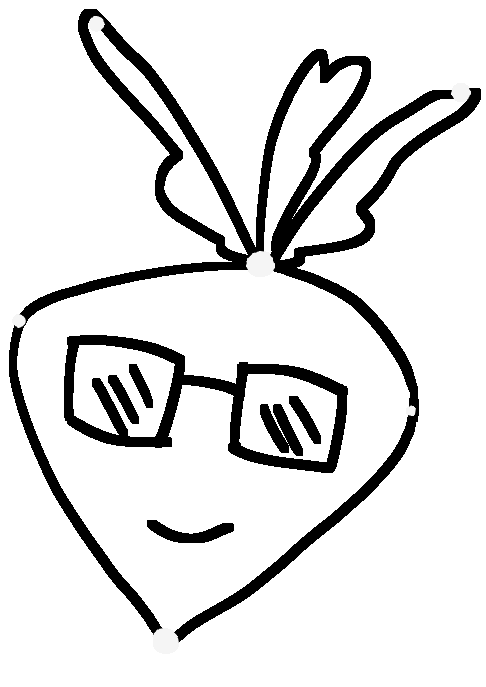
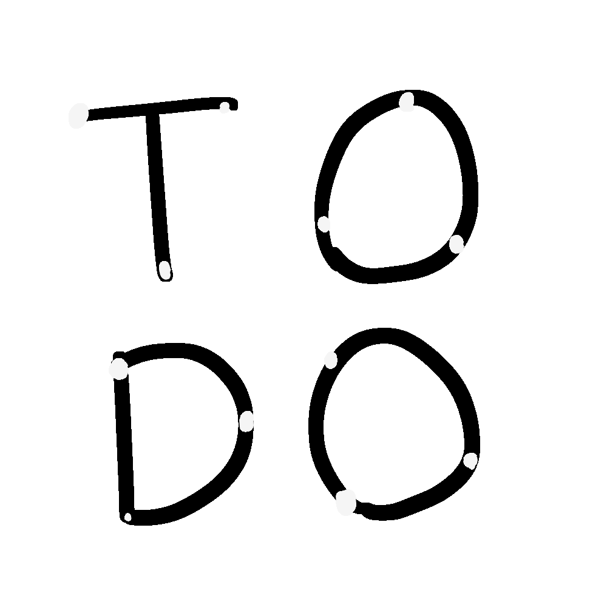
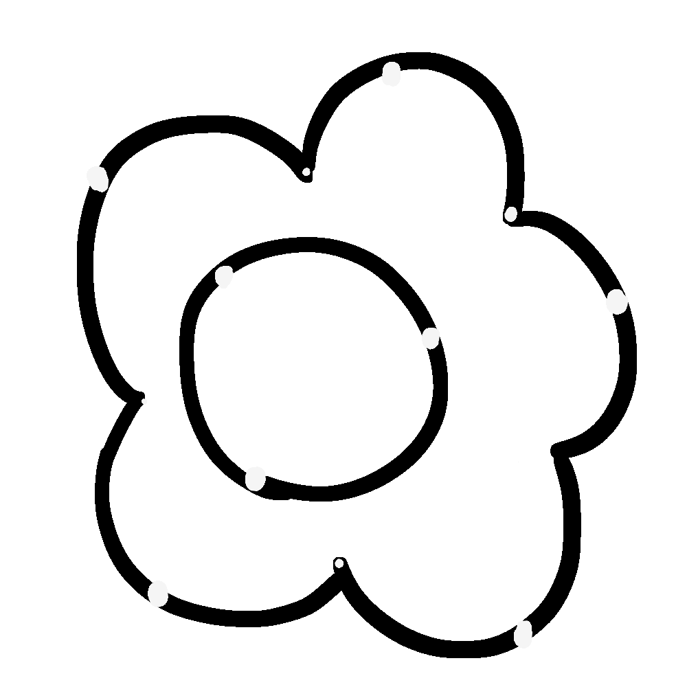
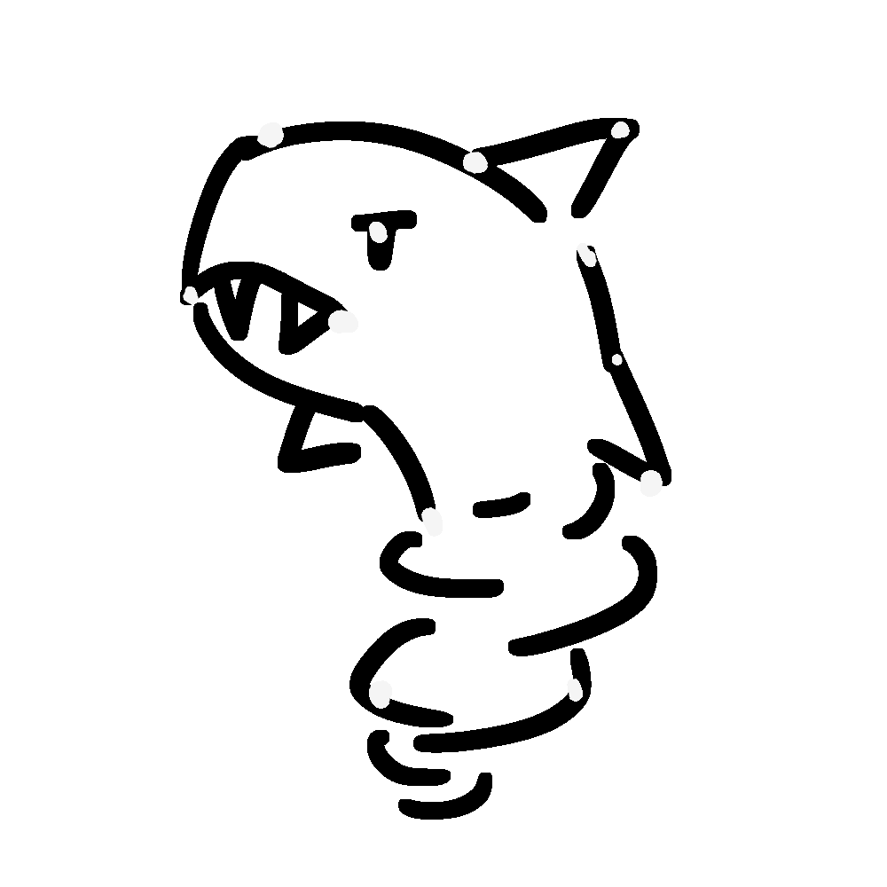

My online alias is radish or raddishradish!
It was inspired by the character Radlad from the game Ooblets.
I don't have any strong feelings about the actual vegetable radish.
I'm an avid Pokémon fan! My favorite game is Platinum, and my favorite Pokémon is Arcanine.
Now I casually play Pokémon GO and am a low-ladder Gen 7 UU and RandBats player on Showdown!

I wish that the constellations were more consistent and I included a custom cursor.
I rewrite the code so it's not so redundant and actually follows a style guide.
I should scale the images according to screen resolution and use svg instead of png.
I'm an avid Pokémon fan! My favorite game is Platinum, and my favorite Pokémon is Arcanine.
Please don't fight me; I'm only a low-ladder Gen 7 UU and RandBats player on Showdown!
I also like Monster Hunter, but I was too lazy to make it its own constellation. I'm also bad at Monster Hunter.

This was made for the Fall 2020 Bloom Fellowship.
As one does, I attended only the first workshop then crammed all of the content I missed in one day.
I probably could have made something better if I spread things out WHOOPS.
I'm a first-year computer science major at UCLA.
I've never been on campus and am zooming from home.
Go Bruins!
I love to draw! I usually draw on a Wacom Intuos.
I used to only draw pencil sketches because I despised coloring.
Now my best friends are the lasso and fill tools.

I'm Ray Hsiao (last name pronounced like "shout" without the "t").
Sadly, most people don't get the pun "hsiaoknado" without explanation.
Please don't pronounce it "huh-see-yow-kay-nah-do;" it's a play on "sharknado."